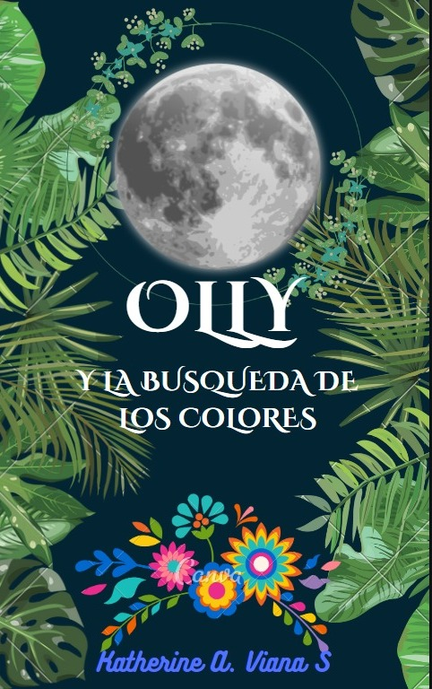

Olly y la busqueda de los colores
Olly es un conejito lleno de creatividad que sueña con poder dibujar muchos colores, aunque su realidad no se lo permita. Emprenderá una búsqueda de un lugar especial lleno de vibrantes colores, pasando por obstáculos y con ayuda de sus amigos conseguirá emprender su viaje Descargar Historia
